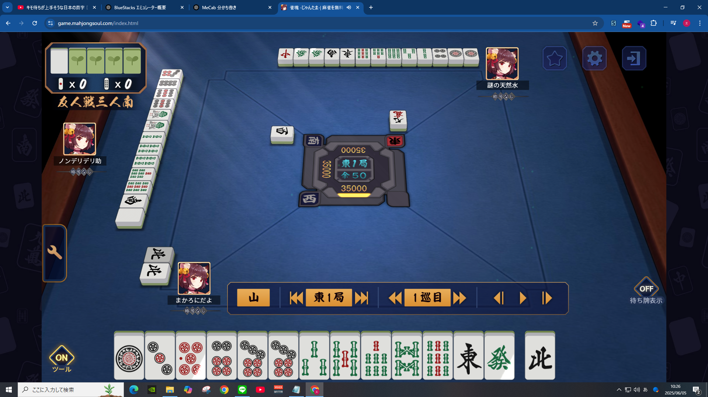
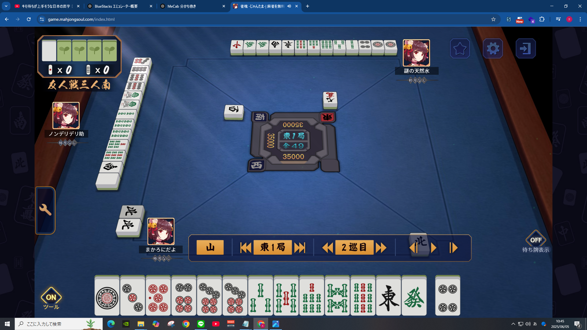
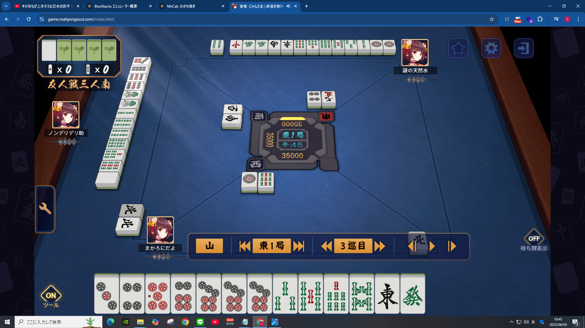
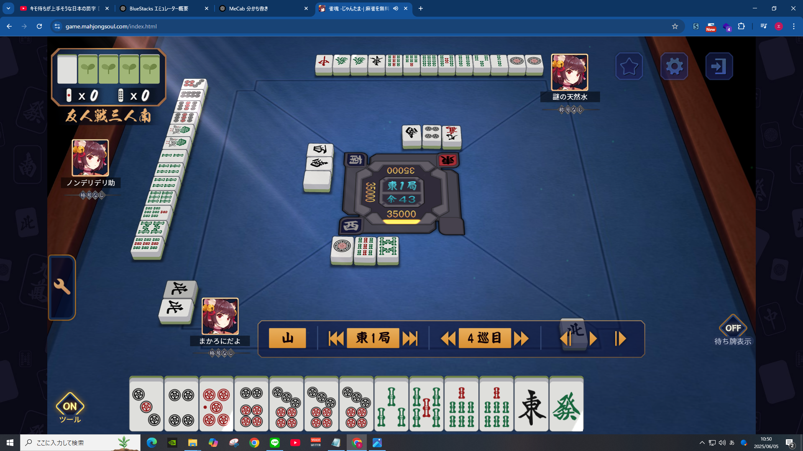
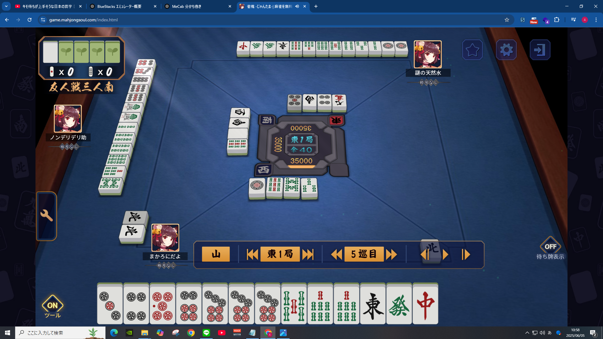
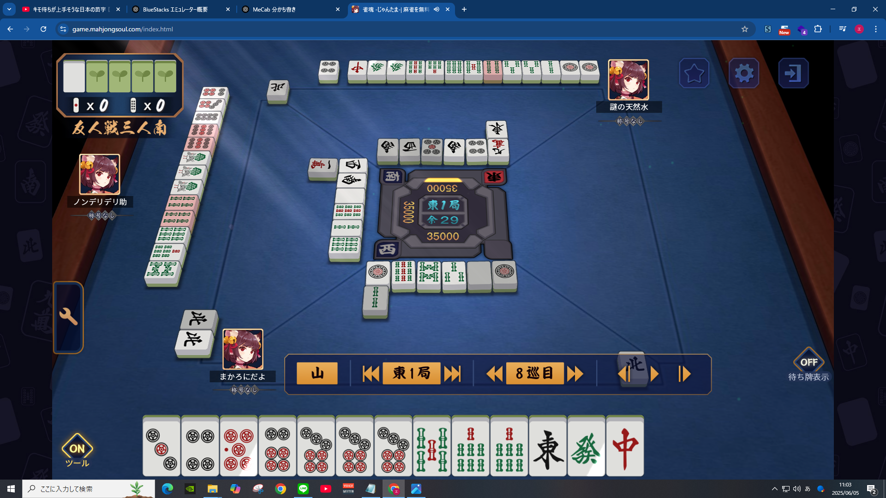
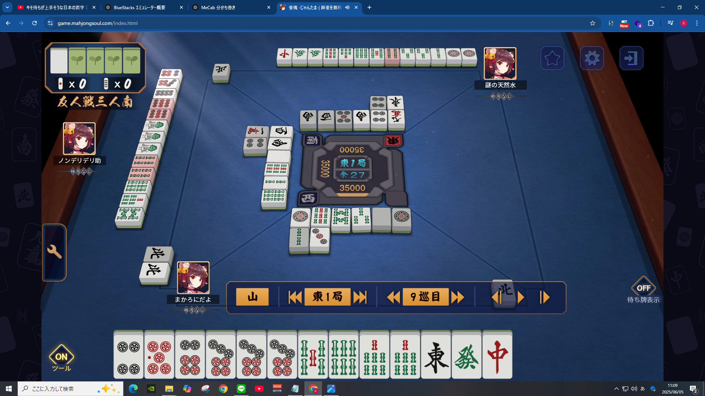
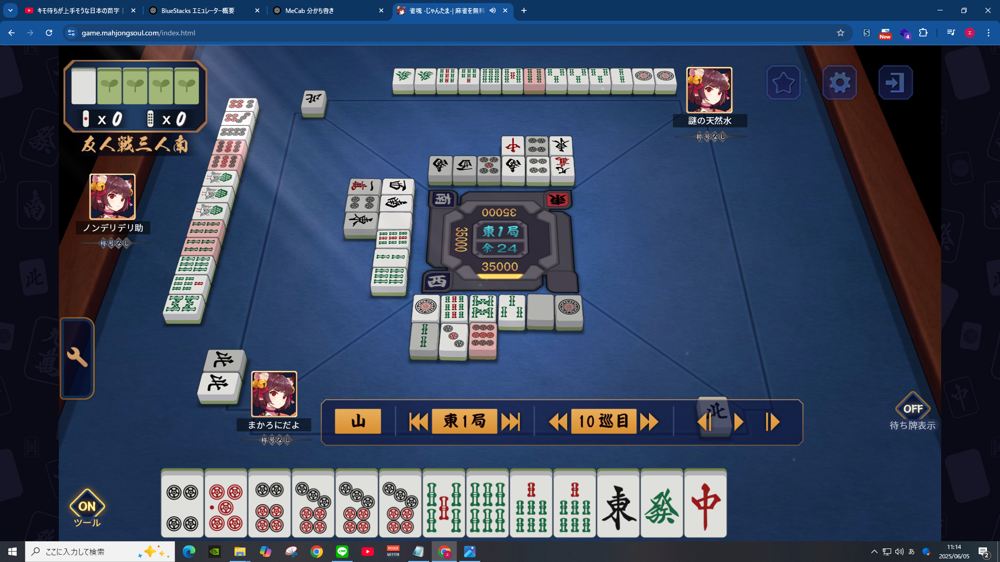

東１局１巡目

まずは左折ちゃんの手牌を確認
麻雀は４面子＋１雀頭の形を目指すと「アガリ」になるので、
まずは手牌に面子がどれだけあるかを確認しよう✌
この画像の左折ちゃんの１局目の手牌を見ていくと、
【ピンズ（丸いヤツ）】
◆５・６・７ が確定してる
【ソーズ（竹みたいなヤツ）】
◆７・８・９ が確定してる
って感じで２面子確定してる（まぁまぁ悪くない）
あと２つ面子を用意する必要があるんだけど、
左折ちゃんの手牌で面子になりそうなものは
【ピンズ】
◆１・３（２待ち）
【ソーズ】
◆３・５（４待ち）
って感じなので、これをベースに手牌を考えていくとOK👊🥺
東１局２巡目

ピンズの４をツモって、ピンズの１を切る
これは左折ちゃんのセンスが光る一打
これにより面子の選択肢が一気に増えて雀頭も出来た
面子
【ピンズ】
◆３・４・５
あるいは
◆４・５・６
雀頭
ピンズの ◆７・７
になって、現状１雀頭、２面子！
この手牌に、ピンズの【２・５・８】のどれかが来ると、
（【２】・３・４ / ５・６・７）
（３・４・【５】 / ５・６・７）
（３・４・５ / ６・７・【８】）
こんな感じでピンズの面子がふえて、３面子になる！ ここまでは完璧👍️
東１局３巡目

ピンズの７をツモって、ソーズの９を切る
一歩進んで一歩下がってしまったところ
ソーズの９を切ってしまうと、せっかく出来てた面子がなくなるので、
面子が確定してる場合は１・９・字牌は切らなくてOK！
とはいえ、ピンズの７を手に入れたので
今手元にある面子は
【ピンズ】
◆３・４・５
あるいは
◆４・５・６
そして
◆７・７・７
【ソーズ】
９がなくなったので消えた＼(^o^)／
現状０雀頭、２面子！
面子候補は
【ピンズ】
◆３・４（２・５待ち）
◆５・６（４・７待ち）
【ソーズ】
◆３・５（４待ち）
◆７・８（６/９待ち）
東１局４巡目

ソーズの７をツモって、ソーズの８を切る
わりと機転が効いたいい切り方✌✌
２巡目でソーズの面子を無くしてしまったけど、
ここでソーズの８を切ってソーズの７を雀頭として２枚揃えるのは上級者
これにより、現状１雀頭、２面子に復活！
面子候補はこうなる
【ピンズ】
◆３・４（２・５待ち）
◆５・６（４・７待ち）
【ソーズ】
◆３・５（４待ち）
東１局５巡目

中をツモって、ソーズの３を切る
面子候補がいなくなっちゃうので、これはBAD🥺
最初から手札にある字牌（東・発）以外は、
確率的に３枚揃う可能性が低いので、
ツモ切り（手に入れた中をそのまま捨てる）してOK
特に、今回のように面子候補がある場合はそっちを活かしたい！
東１局６巡目
白をツモ切り（手に入れてそのまま捨てる）
文句なし！完璧！👏👏
東１局７巡目
ピンズの１をツモ切り
文句なし！完璧！👏👏
東１局８巡目

ソーズの２をツモ切り
悪くはない！
ただこの６～８巡目あたりからは、
そろそろ手持ちの１枚しかない字牌を捨てていってOK
字牌は３枚揃えると役がつくので、他のプレイヤーも狙いやすい
６～８巡目あたりで字牌が全然出てないということは、
他のプレイヤーが２枚かかえてる可能性が高く、
自分に揃うことがないので捨てちゃおう
（実際、天然水さんが発をかかえている）
今回ソーズの２をツモったけど、
５巡目にソーズの３を捨ててなかったら、
面子候補が
◆３・５（４待ち）
から
◆２・３（１・４待ち）
と待ちが多い面子候補になった
東１局９巡目

ソーズの６をツモって、ピンズの３を捨てる
「う～～～～～～～ん」って感じ
この時点での状況を整理すると、
面子は
【ピンズ】
◆４・５・６
◆７・７・７
【ソーズ】
◆５・６・７
って感じで、
３面子０雀頭
面子候補は
【ピンズ】
なし
【ソーズ】
◆５・６（４・７待ち）
ソーズの４か７が来ればソーズの７が雀頭になり、
３面子１雀頭になって、
「あと１面子揃えばあがり！」って状態になる
東１局１０巡目

ピンズの９をツモ切りする
完璧！文句なし！👏👏
東１局１１巡目
ノンデリがツモアガリする
まとめ
実際こうして振り返ってみると、
左折ちゃんが最適な動きをしててもアガれてはなかったので、
結局運ゲー✌
・自分の手札の面子がいくつか、雀頭はどれかを確認する
・面子候補を育てる
・字牌は２枚持ちじゃないなら早めに捨てておく
この３つをとりあえず抑えておけばよさそうでした👊🥺